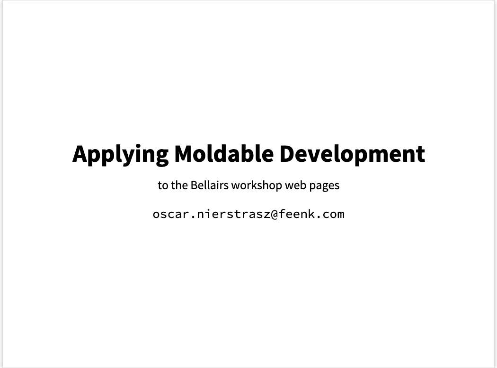
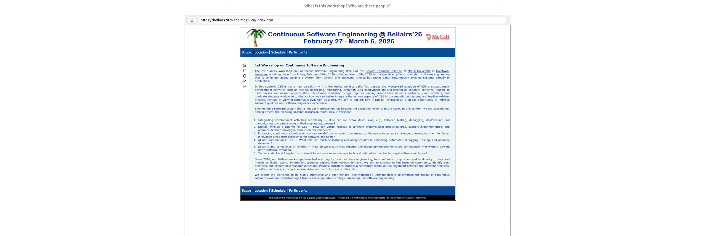
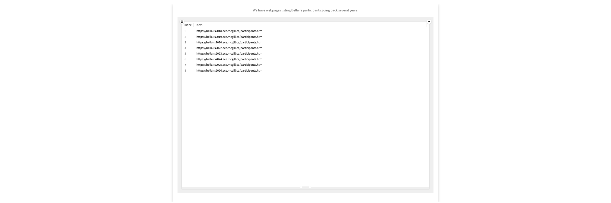
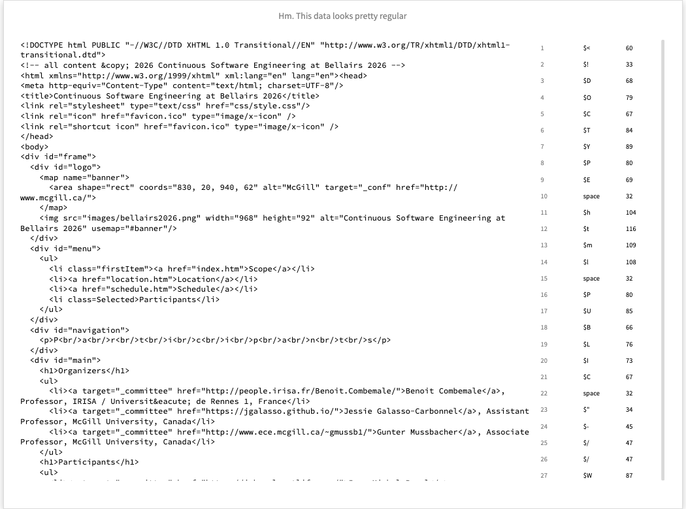
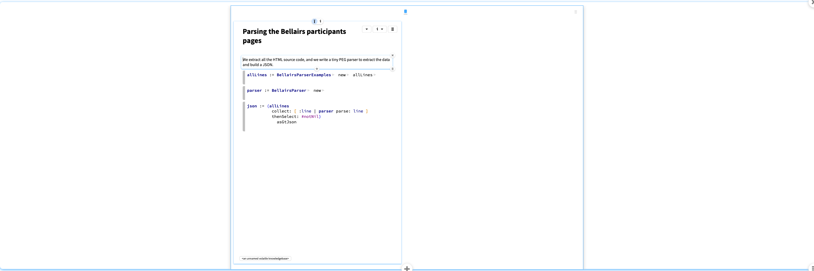
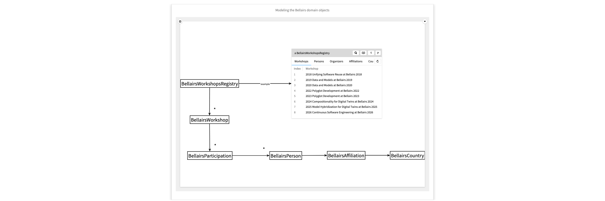
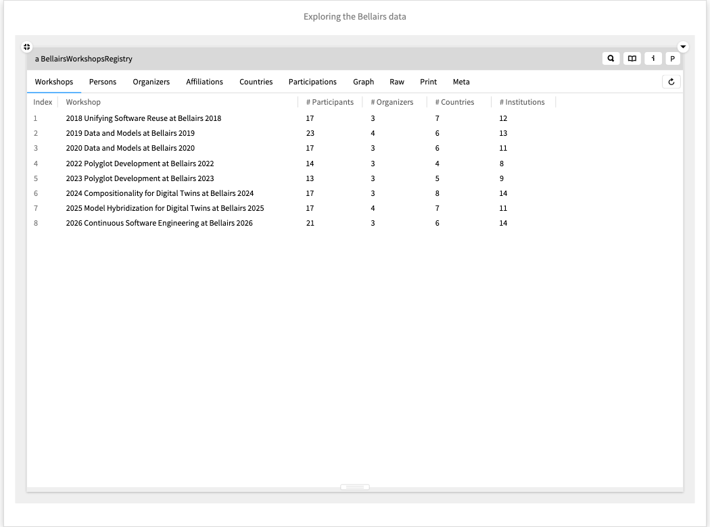
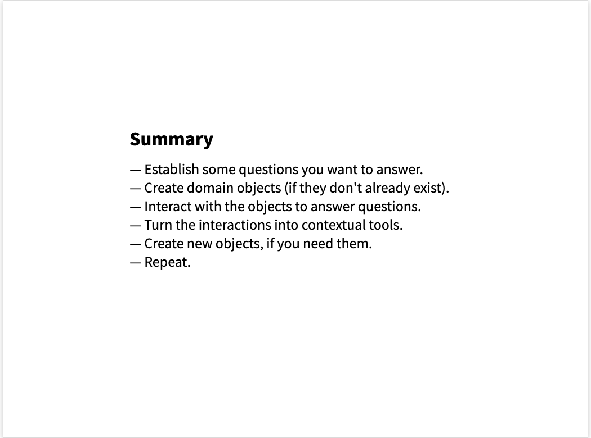
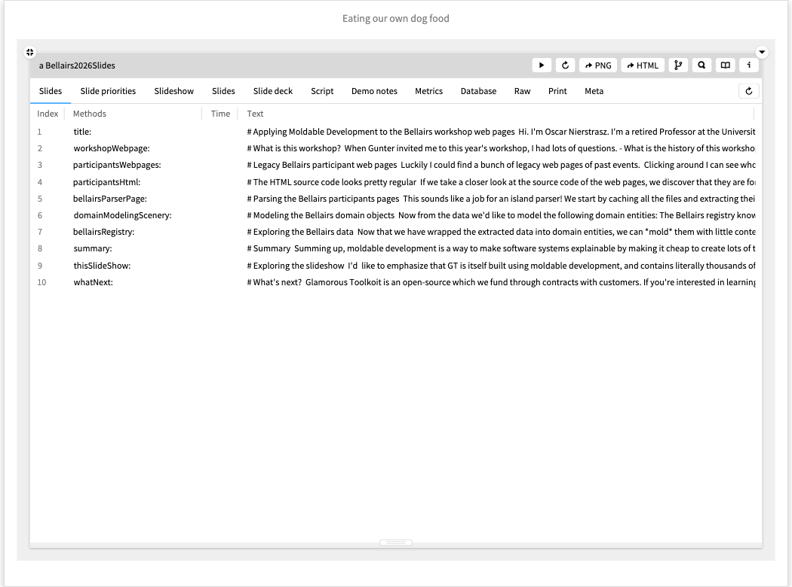
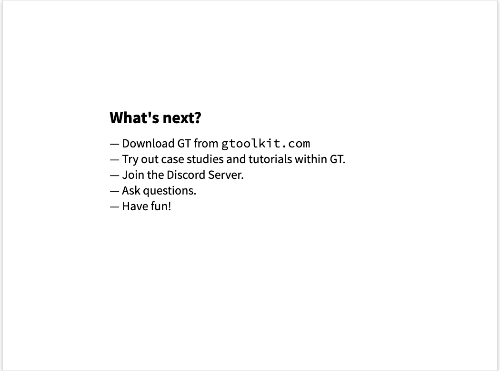

Bellairs2026Slides
Hi. I'm Oscar Nierstrasz. I'm a retired Professor at the University of Bern.
I've been working the past few years for feenk, a company specialized in modernizing legacy systems. We use a process called “Moldable Development” to make software systems explainable. Rather than just talk about it, I'd like to show you how it works by applying it to the Bellairs workshop web pages.

When Gunter invited me to this year's workshop, I had lots of questions. - What is the history of this workshop? - What topics have been addressed over time? - Who are the organizers? - Who has participated regularly over the years?

Luckily I could find a bunch of legacy web pages of past events.
Clicking around I can see who participated in a given year, but I cannot get an overview of who was a repeat participant, who were the organizers, and so on. I am stuck with the views that were hard-coded in the web pages.
BTW, notice that what we see here at the right is actually an object inspector on a ZnUrl object. You might not recognize it as such because you are probably used to seeing just the
Raw
view here.

- Show the Webpage view of a few urls. - Show the raw view.
If we take a closer look at the source code of the web pages, we discover that they are formatted consistently over the years. Maybe we can exploit this fact to extract the raw data.

This sounds like a job for an island parser! We start by caching all the files and extracting their contents, line by line. By the way, please note that this is just an object inspector on an Array of ByteString objects.
We incrementally build a tiny island parser using PetitParser, a PEG-based scannerless parser framework. In the Tree view of the parser instance we can see how the parser is composed of a bunch of smaller parsers. In the Meta view we see how each component parser picks up some piece of information from the source lines. Luckily the input is highly regular, so we have only very few special cases to handle. Each parser component either returns a dictionary of the values found, or nil.
Notice that again what we see at the right is just an object inspector, but instead of having just the usual Raw view, we have views specific to the context of a parser object, such as the Tree view.
The whole parser is less than 100 lines of code, and was iteratively developed with minimal effort.
We apply the parser to all the lines, collect the non-empty dictionaries, and turn that into a JSON object. Once again, we are inspecting a GtJson object at the right, decorated with some views specific to JSONs.

- Inspect each of the three snippets in turn. - Dive into some of the strings of the array of lines. - Show the Tree view and Meta view ofthe parser. - Show The two JSON-specific views.
Now from the data we'd like to model the following domain entities: The Bellairs registry knows about a bunch of workshops, each of which has a bunch of participations listed on the websites. Each participation is for a person (possibly an organizer) with an affiliation to an institution in some country.
For example, on participation is that of Benoit in 2018.
The idea is that each of these domain objects is just a thin wrapper around the data we have extracted. For example, the participation object just wraps the dictionary we have extracted as JSON from one of the webpages.
The registry itself wraps the entire extracted JSON, so we can use it to look anything up.

- Inspect the participation example. - Go to the Raw view to show the wrapped dictionary data. - Click on the registry example and show the Raw view with the JSON and the dictionaries for looking up persons etc.
Now that we have wrapped the extracted data into domain entities, we can mold them with little contextual tools to answer the questions we have about them.
What are the topics of the various workshops? We see them here, and we can dive into the details.
Who attended? We see who they were and how often they attended.
Who were the organizers? Always the same Gang of Five.
Which countries are the participants from? Canada, France and Germany are the big winners. Curiously it seems only one person ever attended from the USA.
And who attended which workshops? Here we see a graph of all attendees with organizers highlighted in red. We can also dive into 2026 and see who at this workshop attended which workshops in the past. Now we can clearly see that there is a cohort of old timers, as well as a large batch of newcomers.
OK, let's take a step back and consider what we have seen. First of all, we wrapped some data to create domain objects. Then we molded these objects to answer questions we had. Note that everything we have seen are just object inspectors on domain objects. Each view is a little, contextual tool.
Let's take a look at the implementation of some of these views. Don't pay too much attention to the details, but note that they are all pretty similar, boilerplate code. In fact, many of these can be generated automatically as we explore the domain objects.
The only view that is a little bit specialized is the graph visualization, but as we see, this is also specified in a just a few lines of code.
In addition to contextual views, we can also have contextual actions, such as opening a webpage or extracting a CSV. And we can have contextual searches as well.
So far I have only shown you that we can mold the object inspector, but the other IDE tools are moldable as well, such as the code editor and the debugger.

- Show the Workshops and other views in sequence. - Show the code of the first few views. - Show the code of the Graph view with the mondrian code. - Show the actions of the 2026 workshop, and select CSV and webpage. - Open the CSV into the O/S (in Excel). - Open the search tool and select "Sw". - Open a class Coder and show some of the views.
Summing up, moldable development is a way to make software systems explainable by making it cheap to create lots of tiny contextual tools that adapt the IDE tools to answer question you have about the domain.
No matter what the domain, whether it be static data, log files, legacy code, a running system, a web API, or whatever, the moldable development process is the same: extract objects, ask questions, create contextual tools, repeat.

I'd like to emphasize that GT is itself built using moldable development, and contains literally thousands of tiny, contextual tools to make GT itself explainable..
As a closing example, consider that this slideshow itself is just a moldable object within GT. The slideshow authoring environment is nothing but an object inspector on a slideshow instance decorated with contextual views, actions and searches. Here's the code of this slide.

— Show several of the views in sequence. — Click on this slide to show its code.
Glamorous Toolkit is an open-source project which we fund through contracts with customers. If you're interested in learning more, talk to me, or download it and try it yourself.
